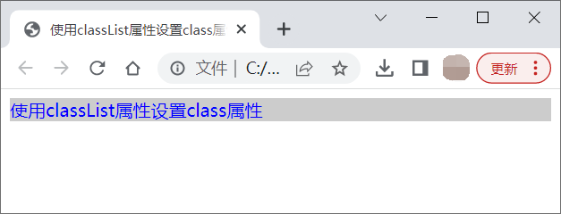
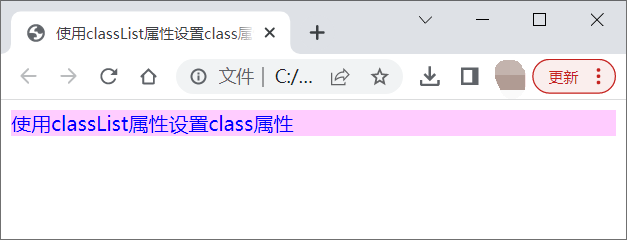
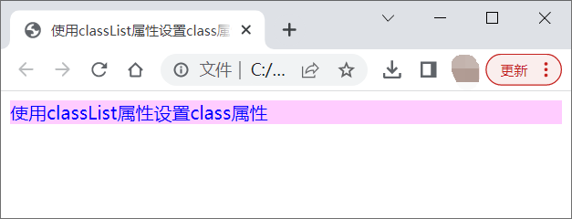

首页 > 编程笔记
JS classList属性的用法
在 JavaScript 中，使用元素的 classList 属性可以访问或添加、删除及修改元素的 class 属性。需注意的是，支持 classList 属性的浏览器主要是一些较新版的，例如：IE10+、Firefox3.6+。
使用 classList 属性访问 class 属性的格式如下：
add()、remove() 和 toggle() 方法中指定的类名不存在时，方法将不会起作用。
【示例】使用 classList 属性设置 class 属性。
当光标移到 div 上时，会调用 classList 的 toggle() 方法来实现背景颜色的设置。由于当前的背景类属性是 bg1，因而此时会添加 bg2 类属性，使得 div 元素的背景颜色变为了由 bg2 类样式设置的粉色。在背景颜色为粉色时再次将光标移到 div 上时，由于当前存在 bg2 类属性，bg2 类属性会被移除，使得背景颜色又变回了由 bg1 类样式设置的最初的灰色。
代码在 Chrome 浏览器中的运行结果分别如图14和图15所示。
从上例中可以看到，classList 的 toggle() 方法结合事件处理代码，可以很容易实现两种状态的相互切换。
使用 classList 属性访问 class 属性的格式如下：
element.classList
classList 是一个只读属性，其返回的值为 DOMTokenList，其中包含了元素的所有 class 属性，不同的 class 属性之间使用一空格分隔。示例如下：
<div id="div1" class="bg red">使用classList属性访问</div>
<script>
var oDiv = document.getElementById("div1");
console.log(oDiv.classList); //输出结果为：DOMTokenList(2) ["bg", "red", value: "bg red"]
</script>
通过 classList 调用 add()、remove() 和 toggle() 等方法可以添加、移除或修改元素 class 属性，格式如下：
element.classList.add((className1[, className2,…]) //添加一个或多个类属性 element.classList.remove((className1[, className2,…]) //移除一个或多个类属性 element.classList.toggle((className[,true|false]) //移除或添加第一个参数指定的class属性toggle() 中的第一个参数为必需参数，当元素中的存在该参数指定的 class 属性时，将移除该 class 属性，同时返回 false；当不存在该参数指定的 class 属性时，则对元素添加该 class 属性，同时返回 true。第二个参数表示强制添加（参数为 true 时）或移除（参数为 false 时）第一个参数指定的 class 属性。
add()、remove() 和 toggle() 方法中指定的类名不存在时，方法将不会起作用。
【示例】使用 classList 属性设置 class 属性。
<!doctype html>
<html>
<head>
<meta charset="utf-8">
<title>使用classList属性设置class属性</title>
<style>
.bg1{background:#CCC;}
.bg2{background:#FCF;}
.blue{color:blue;}
</style>
<script>
window.onload = function (){
var oDiv=document.getElementById("div1");
oDiv.classList.add("bg1","blue");//同时添加bg1和blue两个类属性
//oDiv.classList.remove("blue","green");//同时移除blue和green两个类属性
oDiv.onmouseover=function(){
this.classList.toggle("bg2");//添加或移除bg2类属性
};
};
</script>
</head>
<body>
<div id="div1">使用classList属性设置class属性</div>
</body>
</html>
上述 JS 代码中，首先使用 classList 的 add() 方法给 div 元素添加了 bg1 和 blue 两个类属性，使页面运行后显示灰色背景颜色以及蓝色字体。当光标移到 div 上时，会调用 classList 的 toggle() 方法来实现背景颜色的设置。由于当前的背景类属性是 bg1，因而此时会添加 bg2 类属性，使得 div 元素的背景颜色变为了由 bg2 类样式设置的粉色。在背景颜色为粉色时再次将光标移到 div 上时，由于当前存在 bg2 类属性，bg2 类属性会被移除，使得背景颜色又变回了由 bg1 类样式设置的最初的灰色。
代码在 Chrome 浏览器中的运行结果分别如图14和图15所示。

图14：toggle() 将当前灰色背景修改为粉色

图15：toggle() 将当前粉色背景修改为灰色
图14：toggle() 将当前灰色背景修改为粉色

图15：toggle() 将当前粉色背景修改为灰色
从上例中可以看到，classList 的 toggle() 方法结合事件处理代码，可以很容易实现两种状态的相互切换。
关注公众号「站长严长生」，在手机上阅读所有教程，随时随地都能学习。内含一款搜索神器，免费下载全网书籍和视频。

微信扫码关注公众号